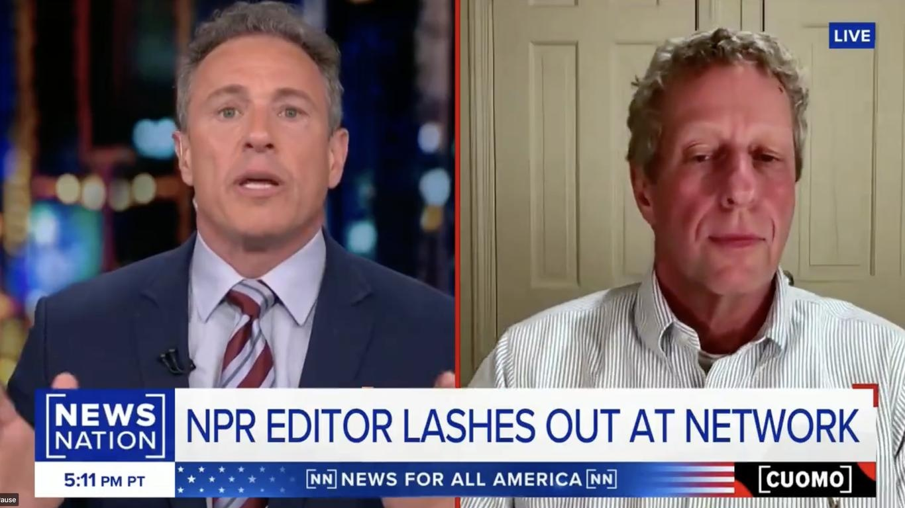

NPR suspends editor who accused network of liberal biasNPR has suspended senior editor Uri Berliner after he wrote an essay deriding the network as having "lost its way" with a dominant "progressive worldview," infuriating his colleagues and delighting conservatives. Why it matters: Berliner's essay published by The Free Press stirred up a fresh debate around trust in media and has been fuel for critics who've long argued public media has moved too far left. - NPR's David Folkenflik reported Tuesday that Berliner's five-day suspension without pay began Friday. - According to the network, Berliner did not seek approval for outside work as is required of its journalists. - After his essay was published, NPR's chief content officer Edith Chapin defended the network in a memo to staff, saying she and leadership "strongly disagree with Uri's assessment of the quality of our journalism and the integrity of our newsroom processes." Catch up quick: Berliner's essay was published earlier this month on The Free Press, which was founded by New York Times defector Bari Weiss. He also appeared on a podcast "Honestly with Bari Weiss." - The 3,500-word piece takes aim at NPR's coverage on topics including trans rights, COVID and the Israel-Hamas war. - It also calls out NPR's coverage of "Russiagate," or allegations that Donald Trump colluded with Russia ahead of the 2016 election and the New York Post coverage of Hunter Biden. (He notes in the essay that he "eagerly voted" against Trump twice.) - "An open-minded spirit no longer exists within NPR, and now, predictably, we don't have an audience that reflects America," he wrote. - "For NPR, which purports to consider all things, it's devastating both for its journalism and its business model." Following the essay's publication, NPR bosses announced monthly internal coverage reviews. - NPR's new CEO Katherine Maher, who never previously worked in a newsroom, was forced to make a public statement after conservatives resurfaced old tweets of hers that supported progressive causes. In one she refers to Trump as a "racist sociopath." - Axios reached out to NPR for confirmation of Berliner's suspension and additional comment. State of play: Berliner has been fairly active on social media since the essay was published, retweeting some references to the essay. - He appeared last week on News Nation with Chris Cuomo, the former CNN anchor fired in 2021 over allegations he aided his brother, former New York Gov. Andrew Cuomo (D), who was accused of sexual misconduct. The big picture: Such debates are happening more frequently within major national newsrooms as political polarization grows in the U.S. and broader trust in institutions, particularly the news media, withers. Between the lines: Weiss founded The Free Press after she left The New York Times as an op-ed columnist in July 2020. - Amid her departure, she argued she had become a victim of "a 'new McCarthyism' that has taken root at the paper of record." Go deeper: Shards of glass: Inside media's 12 splintering realities |
 |